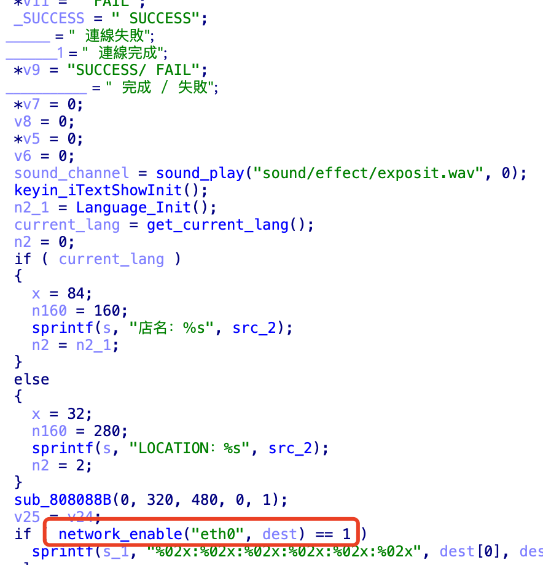
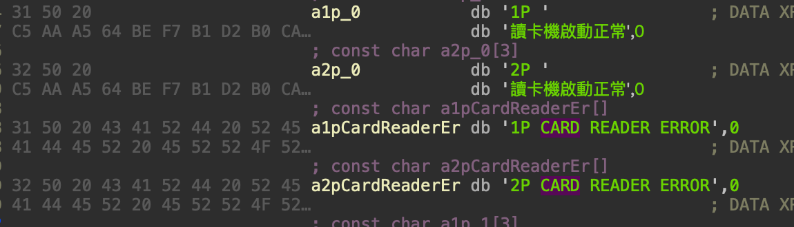

I’ve made quite a bit of progress lately, but I’ve hit a bottleneck. There are probably about three more posts’ worth of material. I’ve been very busy recently, so I’m publishing part three first.
I peeled off the chip sticker and did a detailed analysis. The hardware-analysis direction in part one was basically correct; I updated the chip description for IGS. The code in part two had some bugs, and I’ve updated that as well.
-
IGS Arcade Reverse Engineering Series (1) - E2000 Platform Analysis
-
IGS Arcade Reverse Engineering Series (2) - Game File Recovery
To analyze the game main program efficiently, it’s best to do dynamic debugging on the device, which means getting shell access first. Aside from the CF card and I/O ports, I currently have almost no way to input anything into this device.
If I go the serial-debug route, the first step is finding the hardware debug port, and the next step is modifying the kernel’s built-in boot command. It’s a hassle, requires repacking everything back, and isn’t elegant.
The CF card has two partitions I can write to directly: one is the boot partition where the kernel lives, and the other is a partition for logs and temporary files. That second one might be able to get a shell, but “pwning” this hardware isn’t my goal.
Repacking IGS CRAMFS
Previously, based on the characteristics of IGS’s heavily modified cramfs, I extended cramfs-tools a second time—but it could only unpack, not repack. It wasn’t perfect, and I’m a bit obsessive; I want it to be a real toolkit.
IGS modified cramfs structures. They added a checksum field into cramfs_inode, meaning the inode is verified on every read.
struct cramfs_super {
unsigned int magic1;
unsigned int future; /* future = CRAMFS_MAGIC ^ IGS_MAGIC_MASK2 ^ IGS_MAGIC_MASK1 */
char igs_info[64];
unsigned int size;
unsigned int magic2;
unsigned int flags;
unsigned int padding;
struct cramfs_info fsid;
char name[64];
struct cramfs_inode root;
};
struct cramfs_inode {
u32 inode_magic;
u32 namelen:CRAMFS_NAMELEN_WIDTH, offset:CRAMFS_OFFSET_WIDTH;
u32 size:CRAMFS_SIZE_WIDTH, gid:CRAMFS_GID_WIDTH;
u32 mode:CRAMFS_MODE_WIDTH, uid:CRAMFS_UID_WIDTH;
};
struct cramfs_info {
u32 crc;
u32 edition;
u32 blocks;
u32 files;
};
In get_cramfs_inode, there’s a hidden check: it XORs inode_magic with the root inode’s magic and checks whether the result equals 0x705DE1. If not, it errors out. It’s simple, but it differs per game, and doing the same patch over and over is annoying.
The screenshot below looks readable because I spent some time on it. In fact, IDA’s decompilation was initially wrong and didn’t match the assembly at all. You have to reconstruct the struct first so the branches become correct; otherwise a lot of code gets lost.

I’ve implemented repacking for IGS cramfs: igs-toolkits cramfs-tools
Unpack
sudo ./igs-toolkits/cramfs-tools/cramfsck -v -x./out ./test.img
Repack
sudo ./igs-toolkits/cramfs-tools/mkcramfs ./out test.img
Fixing the shell environment
In the newer PM2008 versions, IGS added many anti-cracking measures. This kernel is very old, and I spent a lot of time solving compatibility problems. After testing many combinations of OS / toolchains / source versions repeatedly, I finally found a stable build environment.
Fixing agetty
After initialization, there is no tty shell, because IGS removed agetty. This component is in util-linux. It needs to be rebuilt with static linking.
CC="/opt/gcc_3.2.2/bin/gcc"
LDFLAGS="-static"
DESTDIR=/root/build-linux-utils
export LDFLAGS CC DESTDIR
./configure --enable-static
make
make install
Then add the following line to /etc/inittab. It looks like there is serial output at 115200; I still haven’t tried via COM. Since I’m researching in my bedroom and space is limited, I prefer more elegant debugging methods.
1:4:respawn:/sbin/agetty ttyS1 115200 vt102
Fixing SSH services
IGS removed the SSH service. I originally wanted to use an off-the-shelf dropbear, but none of them could run. I spent a lot of time finding a compatible dropbear 0.53 and doing a static build (fixing many errors). Many features are hardcoded in the code; I even made some patches, but weird issues still occurred.
So I had to switch to OpenSSH. Newer SSH clients have deprecated old crypto algorithms, and when connecting to an old SSH server you have to explicitly specify algorithms. So I chose a relatively newer openssh and openssl.
After building, generate key pairs. Because algorithms and formats differ, keys must be regenerated.
ssh-keygen -q -t rsa -f ssh_host_key
ssh-keygen -q -t rsa -f ssh_host_rsa_key
sshd_config needs these to be configured manually:
HostKey /home/ssh_host_key
HostKey /home/ssh_host_rsa_key
SyslogFacility AUTHPRIV
LogLevel INFO
PermitRootLogin yes
AuthorizedKeysFile .ssh/authorized_keys
PermitEmptyPasswords yes
X11Forwarding yes
Subsystem sftp /home/sftp-server
Finally, you need to fix sshd’s privilege separation setup, otherwise it will error.
mkdir /var/empty
echo "sshd:x:74:74:Privilege-separated SSH:/var/empty/sshd:/sbin/nologin" >> /etc/passwd
Add the SSH startup command into the boot script mentioned earlier:
/home/sshd -f /home/sshd_config -h /home/ssh_host_rsa_key -p 22 -E /PM2008v2/pm2_data/sshd.log > /PM2008v2/pm2_data/sshd_run.log 2>&1
Fixing ifconfig and enabling networking
IGS disabled network connectivity. I saw in the game code that networking is possible: the game has an OnlineMode. Early versions had global rankings, but the current version doesn’t support it and the code has obvious traces of modification. There’s no place to trigger entering OnlineMode.

The system even has a DHCP service. The IP configuration logic is written in code.

ifconfig was neutered—probably also modified—so I rebuilt my own.
/home/ifconfig eth0 up mtu 1500 >> /PM2008v2/pm2_data/game_stdout.log 2>&1
/home/ifconfig eth0 192.168.2.128 netmask 255.255.255.0 broadcast 192.168.2.255 >> /PM2008v2/pm2_data/game_stdout.log 2>&1
With that, it can connect to an external network.
I also built a version of busybox. I ran into a lot of compatibility issues, made some patches, and spent a long time before it finally compiled successfully. The binaries can be downloaded here:
https://github.com/gorgiaxx/igs-toolkits/tree/master/E2000_binaries
Put these files into the specified directory, repack, write to the CF card, reboot the device, and then the SSH service can be accessed directly.
Because there is no echo, I could only redirect stdout to rdisk4s4, i.e. the ext3 partition, then dump/mount it to view output. It took a lot of time to get this working; I ran these two commands countless times.
sudo dd if=/dev/rdisk4s4 of=./rdisk4s4.img bs=1M && rm -rf ./part4 && 7z x ./rdisk4s4.img -o./part4
sudo ../igs-toolkits/cramfs-tools/mkcramfs ./out test.img && sudo dd if=./test.img of=/dev/rdisk4s2 bs=1M
Game environment analysis
The E2000 host has two I/O interfaces. Control commands come from outside, so even if you get root you still can’t play the game.
Game main program
The game main program actually runs at /exec/PM2008v2 and starts three processes.

From the address space mapping you can tell this program runs under X11 with OpenGL rendering. It can also control the card reader. It calls /dev/plx/Pci9030-0, accessing it via DMA to a virtual address—this should be the game’s physical I/O.
[IGS_Linux]root ~# cat /proc/120/maps
08048000-084b6000 r-xp 00000000 00:08 98 /exec/PM2008v2
084b6000-084cb000 rw-p 0046e000 00:08 98 /exec/PM2008v2
084cb000-0b044000 rwxp 00000000 00:00 0
40000000-40013000 r-xp 00000000 16:02 11153856 /lib/ld-2.3.2.so
40013000-40014000 rw-p 00012000 16:02 11153856 /lib/ld-2.3.2.so
40014000-40015000 rw-p 00000000 00:00 0
40015000-4001d000 r-xp 00000000 16:02 57643504 /usr/sbin/cardread/lib/libcasmcard.so
4001d000-4001e000 rw-p 00007000 16:02 57643504 /usr/sbin/cardread/lib/libcasmcard.so
4001e000-40020000 rwxp 00000000 00:0b 2217 /dev/zero
40020000-4002d000 r-xp 00000000 16:02 12504408 /lib/libpthread-0.10.so
4002d000-4002e000 rw-p 0000d000 16:02 12504408 /lib/libpthread-0.10.so
4002e000-40070000 rw-p 00000000 00:00 0
40070000-40072000 r-xp 00000000 16:02 11995640 /lib/libdl-2.3.2.so
40072000-40073000 rw-p 00001000 16:02 11995640 /lib/libdl-2.3.2.so
40073000-400de000 r-xp 00000000 16:02 28323568 /usr/X11R6/lib/libGL.so.1.0.8762
400de000-400f7000 rwxp 0006b000 16:02 28323568 /usr/X11R6/lib/libGL.so.1.0.8762
400f7000-400f8000 rwxp 00000000 00:00 0
400f8000-400f9000 rw-p 00000000 00:00 0
400f9000-4021e000 r-xp 00000000 16:02 11262808 /lib/libc-2.3.2.so
4021e000-40223000 rw-p 00124000 16:02 11262808 /lib/libc-2.3.2.so
40223000-40225000 rw-p 00000000 00:00 0
40225000-40246000 r-xp 00000000 16:02 12066128 /lib/libm-2.3.2.so
40246000-40247000 rw-p 00020000 16:02 12066128 /lib/libm-2.3.2.so
40247000-40254000 r-xp 00000000 16:02 34514852 /usr/X11R6/lib/libXext.so.6.4
40254000-40255000 rw-p 0000c000 16:02 34514852 /usr/X11R6/lib/libXext.so.6.4
40255000-40331000 r-xp 00000000 16:02 33143504 /usr/X11R6/lib/libX11.so.6.2
40331000-40334000 rw-p 000db000 16:02 33143504 /usr/X11R6/lib/libX11.so.6.2
40334000-40342000 r-xp 00000000 16:02 57803624 /usr/sbin/cardread/lib/libpcsclite.so.0.0.1
40342000-40343000 rw-p 0000d000 16:02 57803624 /usr/sbin/cardread/lib/libpcsclite.so.0.0.1
40343000-40344000 rw-p 00000000 00:00 0
40344000-40ad2000 r-xp 00000000 16:02 28719620 /usr/X11R6/lib/libGLcore.so.1.0.8762
40ad2000-40b02000 rwxp 0078d000 16:02 28719620 /usr/X11R6/lib/libGLcore.so.1.0.8762
40b02000-40b06000 rwxp 00000000 00:00 0
40b06000-40b07000 rw-p 00000000 00:00 0
40b07000-40b08000 r-xp 00000000 16:02 40614972 /usr/X11R6/lib/libnvidia-tls.so.1.0.8762
40b08000-40b09000 rw-p 00000000 16:02 40614972 /usr/X11R6/lib/libnvidia-tls.so.1.0.8762
40b09000-40b6b000 rw-p 00000000 00:00 0
40b6b000-40b6c000 rw-s 00000000 00:0b 2004 /dev/plx/Pci9030-0
40b6c000-40b8c000 rw-s 00000000 00:0b 2004 /dev/plx/Pci9030-0
40b8c000-40b8d000 rw-s 00000000 00:0b 2004 /dev/plx/Pci9030-0
40b8d000-4158e000 rw-p 00000000 00:00 0
4158e000-41596000 r-xp 00000000 16:02 34498192 /usr/X11R6/lib/libXcursor.so.1.0
41596000-41597000 rw-p 00007000 16:02 34498192 /usr/X11R6/lib/libXcursor.so.1.0
41597000-4159e000 r-xp 00000000 16:02 37237160 /usr/X11R6/lib/libXrender.so.1.2
4159e000-4159f000 rw-p 00006000 16:02 37237160 /usr/X11R6/lib/libXrender.so.1.2
4159f000-415a0000 rw-s e8001000 00:0b 1990 /dev/nvidia0
415a0000-415a1000 rw-s e8c02000 00:0b 1990 /dev/nvidia0
415a1000-415aa000 r-xp 00000000 16:02 12388932 /lib/libnss_files-2.3.2.so
415aa000-415ab000 rw-p 00008000 16:02 12388932 /lib/libnss_files-2.3.2.so
415ab000-415c2000 rw-s 00000000 00:04 0 /SYSV00000000 (deleted)
415c2000-416ee000 rw-s d0000000 00:0b 1990 /dev/nvidia0
416ee000-41750000 rw-p 00000000 00:0b 2217 /dev/zero
41750000-41791000 rw-p 00000000 00:00 0
41791000-41893000 rw-s e0011000 00:0b 1990 /dev/nvidia0
41893000-41894000 rw-s 16fc2000 00:0b 1990 /dev/nvidia0
41894000-41895000 rw-s 17027000 00:0b 1990 /dev/nvidia0
41895000-41896000 rw-s df93b000 00:0b 1990 /dev/nvidia0
41896000-4189a000 rw-s 17025000 00:0b 1990 /dev/nvidia0
4189a000-4189b000 rw-s df939000 00:0b 1990 /dev/nvidia0
4189b000-4189c000 rw-s 17021000 00:0b 1990 /dev/nvidia0
4189c000-4199c000 rw-s e0114000 00:0b 1990 /dev/nvidia0
4199c000-4199d000 rw-s 00000000 00:04 98305 /SYSV00000000 (deleted)
4199d000-4199e000 rw-s 00000000 00:04 131074 /SYSV00000000 (deleted)
4199e000-41a56000 rw-p 00000000 00:00 0
41a56000-41a57000 ---p 00000000 00:00 0
41a57000-41c56000 rwxp 00001000 00:00 0
41c56000-43096000 rw-p 00003000 00:00 0
43096000-43097000 r--s 00000000 00:07 2709 /tmp/pcsc/.pcscpub
43097000-43098000 r--s 00001000 00:07 2709 /tmp/pcsc/.pcscpub
43098000-43099000 r--s 00002000 00:07 2709 /tmp/pcsc/.pcscpub
43099000-4309a000 r--s 00003000 00:07 2709 /tmp/pcsc/.pcscpub
4309a000-4309b000 r--s 00004000 00:07 2709 /tmp/pcsc/.pcscpub
4309b000-4309c000 r--s 00005000 00:07 2709 /tmp/pcsc/.pcscpub
4309c000-4309d000 r--s 00006000 00:07 2709 /tmp/pcsc/.pcscpub
4309d000-4309e000 r--s 00007000 00:07 2709 /tmp/pcsc/.pcscpub
4309e000-4309f000 r--s 00008000 00:07 2709 /tmp/pcsc/.pcscpub
4309f000-430a0000 r--s 00009000 00:07 2709 /tmp/pcsc/.pcscpub
430a0000-430a1000 r--s 0000a000 00:07 2709 /tmp/pcsc/.pcscpub
430a1000-430a2000 r--s 0000b000 00:07 2709 /tmp/pcsc/.pcscpub
430a2000-430a3000 r--s 0000c000 00:07 2709 /tmp/pcsc/.pcscpub
430a3000-430a4000 r--s 0000d000 00:07 2709 /tmp/pcsc/.pcscpub
430a4000-430a5000 r--s 0000e000 00:07 2709 /tmp/pcsc/.pcscpub
430a5000-430a6000 r--s 0000f000 00:07 2709 /tmp/pcsc/.pcscpub
430a6000-4352f000 rw-p 00000000 00:00 0
43530000-441c9000 rw-p 0048a000 00:00 0
4423c000-44322000 rw-p 01196000 00:00 0
443a7000-444b0000 rw-p 01301000 00:00 0
bfde2000-c0000000 rwxp ffde3000 00:00 0
The game program itself contains a lot of strings that look like encoded data. Before this, I had never dealt with Big5 encoding. I just asked DeepSeek to write a script to identify it.
import chardet
from encodings.aliases import aliases
def try_all_encodings(hex_str):
all_encodings = set(aliases.values())
byte_data = bytes.fromhex(hex_str.replace(" ", ""))
print(f"原始16进制数据: {hex_str}")
print(f"字节长度: {len(byte_data)} bytes\n")
detected = chardet.detect(byte_data)
print(f"自动检测结果: {detected['encoding']} (置信度: {detected['confidence']:.2%})")
common_encodings = [
'gbk', 'gb18030', 'gb2312',
'utf-8', 'utf-16', 'big5',
'hz', 'iso-2022-jp', 'euc-kr'
]
print("\n=== 常见编码测试 ===")
for enc in common_encodings:
try:
decoded = byte_data.decode(enc)
print(f"[{enc.upper()}]: {decoded}")
except:
pass
print("\n=== 完整编码测试 ===")
for enc in sorted(all_encodings):
try:
decoded = byte_data.decode(enc)
if decoded.isprintable():
print(f"[{enc}]: {decoded}")
except:
continue
if __name__ == "__main__":
hex_data = "C2 F7 B6 7D 3A A6 50 AE C9 BA 56 C0 BB 31 50 A4 CE 32 50 B9 AA AD B1"
try_all_encodings(hex_data)
The game was developed in Taiwan and uses Traditional Chinese. IDA can’t recognize it automatically, so it needs to be added manually.
Option -> Strings -> Default(8-bit) -> Insert(Right Click) -> Big5

Since it’s non-ASCII and there isn’t a great automatic way to detect it, I’ll just follow the same “fix strings” approach from the previous post.

When running the game main program, it only prints these logs:
[IGS_Linux]root /proc/sys# /exec/PM2008v2
Device Handle 4
Version Major 4,Minor 3,Rev 0
Get Virtual address!!
[CommandPortAddresss]=0x40b8c000,[ShareRAMAddress]=0x40b6c000
Clear CommandPort Complete.
start
The dprintf logic was removed in the code, so it won’t print logs.
Bottleneck
I’ve hit a bottleneck: for rhythm games, hit detection is handled by the ASIC, and the ASIC passes the judgment state to the CPU. The main program contains no judgment logic. I’ve already analyzed the ASIC27 protocol; writing my own judgment logic would be fine, but that’s no longer “cracking”. Only by cracking the ASIC can you perfectly emulate these games. Next I need to dump the ASIC firmware, which is very difficult—I’m not sure I can finish it this year.
There are two more posts’ worth of work already done; I’ll write them when I have time.
- IGS Arcade Reverse Engineering Series (4) - ASIC27 Protocol and TSGROM Static Analysis
- IGS Arcade Reverse Engineering Series (5) - ASIC27 Protocol Hooking and Main Program Patching
Rant: Hexo
Last month my Linux PC’s CPU basically cooked itself. The cause was long-term operation and poor cooling. I spent a lot of time troubleshooting, migrating tools, and then moved the blog environment to a new computer.
I used to write posts by using nvm to switch to an old Node version and running the Hexo framework to generate static pages. I hadn’t touched that setup for 8 years. Ever since then, Hexo’s dependencies have been a mess—updates always break something—so I didn’t dare to upgrade.
The old environment was very hard to run on macOS. Neither building from source nor using Homebrew worked. I don’t understand why a Node.js project needs Python 3.8.
With that pile of messy dependencies, even the latest Hexo wouldn’t work; lots of themes were incompatible. I’m already using asdf, how is it still like this? I gave up on Hexo decisively and spent a lot of time migrating the blog to Hugo.
 CC BY-NC-SA 4.0
CC BY-NC-SA 4.0